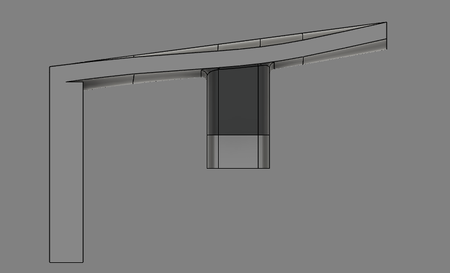

soph week 4/14 - 4/18
short post since i won't be here tomorrow. made good progress this week tho.
grip (wings)
finally added the “wings” i mentioned last week.

this completes the mouse shell design. still need to figure out trigger attachment (more below), though resin printing might make that unnecessary. my initial attachment idea didn’t work well.
printed parts
tried using small stands and pegs to attach the triggers, but they were too thin (.95mm) and fragile - broke with slight pressure. the holes also came out weird.
to fix this, i decided to increase the thickness of the button part of my triggers while also simultaneously increasing the distance between the stand/hole with the sides.
trigger problems
i couldn't just extrude the face to increase the thickness due to the upward angle of the triggers.
notice how as the trigger starts angling upwards, a gap forms
this was a major problem that i wasn’t originally sure how to solve, as i wasn’t able to print like this, but didn’t know what the problem was.
eventually with mr.l’s help, i got the trigger’s thickness to increase: utilized an offset plane and projecting both the face and the intercept and connecting the two faces, extruding them to each other.
now the triggers (should) work, just need to add pegs/holes for attachment.
other problems
with the new shell and triggers, i tested the pcb and found some other problems.
1. pcb stability: needed to secure the pcb against the sensor block because it was loose.
2. trigger length: didn't account for sensor block height, and now it prevents clicking
by solving these two problems and resoldering the original pcb back up, i should be done. i may add a circle thingy(?) for the wires to cleanly flow through.
additionally, i’m thinking of stealing a scroll wheel and resin printing it to put with my mouse (assuming it fits given my dimensions, as it was designed for a different mouse)